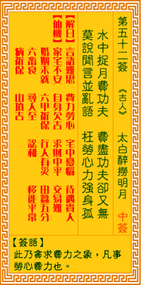

观音灵签第五十二签 【太白醉捞明月】 |
 | |||
水中捉月费功夫 费尽功夫却又无 莫信闲言并浪论 枉拋心力也难图 |
||||
| 【吉凶】 | 下下签 | 【宫位】 | 子宫 | |
| 【签语】 | 此卦贪求费力之象，凡事劳心费力也。 | |||
| 【解曰】 | 言语难思 费力劳心 宅中忧恼 待遇贵人 | |||
| 【仙机】 | 此签家宅不安，自身欠安，求财中平，交易难，婚姻未就，六甲祈保，行人有灾，田蚕五分，六畜衰，寻人至，讼和，移徙平常，病祈保 ，山坟吉。 | |||
| 【详解】 | 犹如费工夫想要捞起在水中的月亮，耗尽了方法仍是一场空;别再听信流言和不真实的话语，枉费心思力气，最终想要谋取的事物终究难以如愿。 讹言莫信，费力劳心，家宅不利，不可妄行。此签水中捉月之象，凡事所为不利。 水中捉月之象。凡事所为不利。在水中捞月亮很费工夫。但是费尽工夫却又捞不到。不要相信闲言和没有根据的言论。白白用心。做事也不能完成目标。易言之。讹言莫信。费力劳心。家宅不利。不可妄行。 此签有”枉费心力”之意。奉劝当事人，眼见不一定为凭。须知社会上很多种现象都是真真假假、假假真真。有时眼里看到的、耳里听见的，都可能只是表面，甚或是一种假象。是、非、真、假，唯有靠智慧来判断。在做任何事之前，一定要经过仔细的思考与再三的求证。莫被一时的假象所迷惑，也不要立刻就信以为真、冒失行动，结果恐导致白忙一场，只是徒劳心力而已。 | |||
| 【典故】 | 李太白是唐朝诗仙，写了许多诗和文章，流传后世。太白喜欢喝酒，被称为酒仙。六十二岁死，传说当时他喝得酩酊大醉，走上船去，看 见水里有月，他跳下水去捞月，结果溺死，后来人有说看到飞来一条鲸鱼，上面骑着一位白衣仙人，飞到天上月宫去了，那白衣仙人就是李太白。 | |||